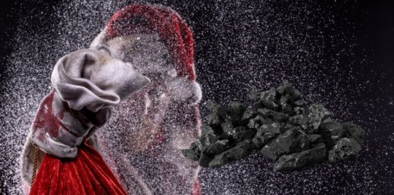
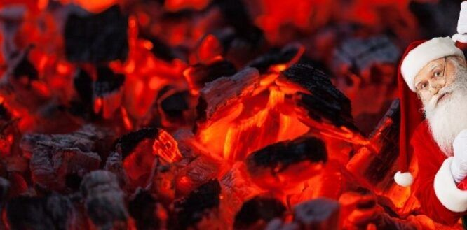

“If you don’t behave, Santa won’t give you any presents for Christmas – just a big lump of coal.”
Now I can tell you that is a sentence I would hear as a kid at least once a year (and usually more often) in the run-up to Christmas.
The mere prospect of unwanted fossil fuels in lieu of toys and chocolate was enough to send me running off in a fearful fit of tears, promising to amend my tantrum-ing ways!
But where exactly does this notion come from? It can’t have been unique, because my childhood best-friend said his mom had said that to him too.
So let’s do a little digging and go on a journey of festive discovery together.
In the early days of Santa, he was known for only delivering presents to the good kids and punishing the bad ones.
Even back in the early 1800s, literature about Santa didn’t have him punishing bad kids with lumps of coal, but rather “a long, black, birched rod” as a lash for dealing out physical punishment.
That said, though, coal was still a relatively new thing on a domestic level in the early 1800s, so it’s fair to assess coal wouldn’t be commonplace back then and as such wouldn’t have really made it into common folklore.
So instead of coal, naughty kids got stones, ashes, cold potatoes, or – the most sinister of them all – a bit of a light whipping or a beating from the jolly red fellow.
Or was he green back then? Or is green Santa a myth? I can never remember why Santa is really red.

Well, truth be told, the coal is quite a hard thing to pin down.
In fact, it might pre-date the earliest of early Santa himself, but the snows are very muddied on this one I’m afraid!
So, whilst it’s a staple that Santa has always punished the naughty kids, the coal seems to come from a whole bunch of different places.
In Italian folklore, kids were visited by a witch on her flying broomstick who dished out gifts and candy to the good kids, and coal to the bad kids.
Some people think that the idea of bad kids getting coal came from 16th Century Holland.
Children would put their clogs by the fireplace on Christmas Eve and the good kids would get them filled with candy or small toys but the bad kids would have their clogs filled with coal.
In Victorian England, Santa would only give coal to poor kids as a form of punishment for the bad deeds that made their family poor.
However, this would prove beneficial to the poor families as they could burn the coal, something which they couldn’t usually afford.
So why coal?
Simple answer: we just don’t know!
All we can really do is speculate on why he delivers the coal. One thing a lot of people suspect is that it all links to the chimney and the fireplace.
Santa and his various helpers within the different folklore versions around the world often enter a house from the chimney, delivering gifts that are by the fireplace.
Therefore it would make sense that coal, a marker of bad kids, is something related to the fireplace.
This links into the Germanic version of ye olde Santa, where he would deliver bags of ashes to naughty kids rather than a lump of coal.
So, whilst we might not know why Santa gives coal to bad kids, we do know that you better watch out, you better not shout, you better not pout – unless you want a big lump of coal in your stocking.